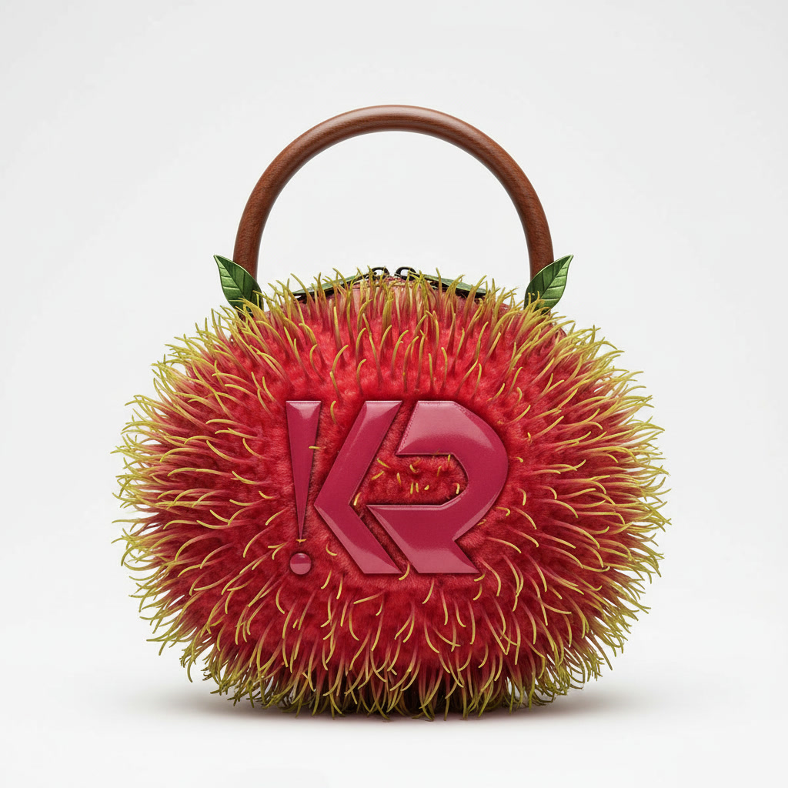

Clutch — structured
Rambutan
Structured chaos, held together by a walnut handle.
Every spine is cut and set by hand into a raspberry-dyed base, finished with two folded leaves at the seam. It looks unstable. It isn't — the frame beneath holds its shape through a full day of carrying.